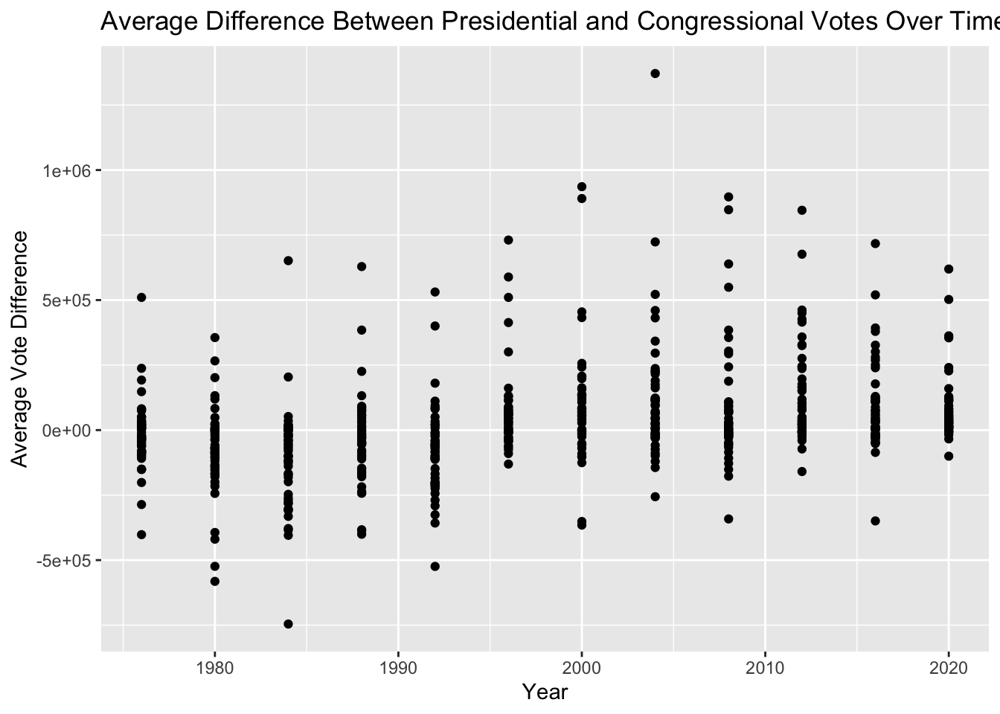

Mini-Project #03: Do Proportional Electoral College Allocations Yield a More Representative Presidency?
Introduction: For this assignment I analyzed if the the claim that the U.S. Electoral College systematically biases election results away from the popular vote. In January 2021, Democratic Party’s leading data analysts, David Shor, stated “One underrated thing about the 2020 election is that the partisan bias of the electoral college, already at it’s largest point in nearly a century, got substantially larger.” To analyze their claim, I worked with political data such as presidential election results under different allocations for presence or absence of bias.
Exploration of Vote Count Data
- Which states have gained and lost the most seats in the US House of Representatives between 1976 and 2022?
To answer this question, I first calculated the changes in the House of Representatives. From the graph below we can see Texas has had the biggest increase in seats when we compare 1976 to 2022.
- Are there any elections in our data where the election would have had a different outcome if the “fusion” system was not used and candidates only received the votes their received from their “major party line” (Democrat or Republican) and not their total number of votes across all lines?
From our data, we know that there has been elections were the outcome with no fusion would have been different
# A tibble: 1 × 8
year candidate party candidatevotes allpartyvotes totalvotes
<dbl> <chr> <chr> <dbl> <dbl> <dbl>
1 2020 GEORGE AD SANTOS REPUBLICAN 147461 161931 398887
# ℹ 2 more variables: outcome_with_fusion <chr>, outcome_no_fusion <chr>- Do presidential candidates tend to run ahead of or run behind congressional candidates in the same state? That is, does a Democratic candidate for president tend to get more votes in a given state than all Democratic congressional candidates in the same state?
Looking at the data I collected it seems Democratic candidate for president tend to get the about same votes in a given state compared to Democratic congressional candidates
Code
Popularity_vote_pres <- presidents_1976_2020 |>
filter(party_simplified == "DEMOCRAT") |>
select(year, state, candidate, candidatevotes, totalvotes, party_simplified)|>
group_by(state, year,party_simplified) |>
summarise(total_pres_votes = sum(candidatevotes), .groups = "drop")Code
Popularity_vote_house <- house_of_reps |>
filter(party == "DEMOCRAT") |>
select(year, state, candidate, candidatevotes, totalvotes, party)|>
group_by(state, year, party) |>
summarise(total_house_votes = sum(candidatevotes), .groups = "drop")Code
Popularity_vote <- Popularity_vote_pres|>
inner_join(Popularity_vote_house, by = c("state", "year"))|>
mutate(difference = total_pres_votes - total_house_votes)library(ggplot2)
ggplot(Popularity_vote, aes(x = year, y = difference)) +
geom_line() +
labs(title = "Average Difference Between Presidential and Congressional Votes Over Time",
x = "Year",
y = "Average Vote Difference")
Importing and Plotting Shape File Data
library(tidyverse)── Attaching core tidyverse packages ──────────────────────── tidyverse 2.0.0 ──
✔ forcats 1.0.0 ✔ stringr 1.5.1
✔ lubridate 1.9.3 ✔ tibble 3.2.1
✔ purrr 1.0.2
── Conflicts ────────────────────────────────────────── tidyverse_conflicts() ──
✖ dplyr::filter() masks stats::filter()
✖ dplyr::lag() masks stats::lag()
ℹ Use the conflicted package (<http://conflicted.r-lib.org/>) to force all conflicts to become errorslibrary(sf)Linking to GEOS 3.11.0, GDAL 3.5.3, PROJ 9.1.0; sf_use_s2() is TRUE# Load necessary package
library(sf)
# Create a temporary directory and unzip the file
td <- tempdir()
zip_contents <- unzip("districts106.zip", exdir = td)
# Find the .shp file within the unzipped contents
fname_shp <- zip_contents[grepl("shp$", zip_contents)]
# Read the shapefile
district_map <- read_sf(fname_shp)
# Display the map data
district_mapSimple feature collection with 436 features and 15 fields (with 1 geometry empty)
Geometry type: MULTIPOLYGON
Dimension: XY
Bounding box: xmin: -179.1473 ymin: 18.9177 xmax: 179.7785 ymax: 71.35256
Geodetic CRS: GRS 1980(IUGG, 1980)
# A tibble: 436 × 16
STATENAME ID DISTRICT STARTCONG ENDCONG DISTRICTSI COUNTY PAGE LAW
<chr> <chr> <chr> <chr> <chr> <chr> <chr> <chr> <chr>
1 California 00610310… 26 103 107 <NA> <NA> <NA> <NA>
2 California 00610310… 29 103 107 <NA> <NA> <NA> <NA>
3 California 00610310… 30 103 107 <NA> <NA> <NA> <NA>
4 Florida 01210510… 13 105 107 <NA> <NA> <NA> <NA>
5 Florida 01210510… 14 105 107 <NA> <NA> <NA> <NA>
6 Florida 01210510… 15 105 107 <NA> <NA> <NA> <NA>
7 Florida 01210510… 19 105 107 <NA> <NA> <NA> <NA>
8 Florida 01210510… 21 105 107 <NA> <NA> <NA> <NA>
9 Illinois 01710310… 9 103 107 <NA> <NA> <NA> <NA>
10 Kentucky 02110510… 3 105 107 <NA> <NA> <NA> <NA>
# ℹ 426 more rows
# ℹ 7 more variables: NOTE <chr>, BESTDEC <chr>, RNOTE <chr>, FROMCOUNTY <chr>,
# LASTCHANGE <chr>, FINALNOTE <chr>, geometry <MULTIPOLYGON [°]>library(sf)
td <- tempdir()
us_map <- unzip("tl_2024_us_state.zip ", exdir = td)Warning in unzip("tl_2024_us_state.zip\t", exdir = td): error 1 in extracting
from zip filemap_fname_shp <- zip_contents[grepl("shp$", zip_contents)]
us_map <- read_sf(map_fname_shp)
us_mapSimple feature collection with 436 features and 15 fields (with 1 geometry empty)
Geometry type: MULTIPOLYGON
Dimension: XY
Bounding box: xmin: -179.1473 ymin: 18.9177 xmax: 179.7785 ymax: 71.35256
Geodetic CRS: GRS 1980(IUGG, 1980)
# A tibble: 436 × 16
STATENAME ID DISTRICT STARTCONG ENDCONG DISTRICTSI COUNTY PAGE LAW
<chr> <chr> <chr> <chr> <chr> <chr> <chr> <chr> <chr>
1 California 00610310… 26 103 107 <NA> <NA> <NA> <NA>
2 California 00610310… 29 103 107 <NA> <NA> <NA> <NA>
3 California 00610310… 30 103 107 <NA> <NA> <NA> <NA>
4 Florida 01210510… 13 105 107 <NA> <NA> <NA> <NA>
5 Florida 01210510… 14 105 107 <NA> <NA> <NA> <NA>
6 Florida 01210510… 15 105 107 <NA> <NA> <NA> <NA>
7 Florida 01210510… 19 105 107 <NA> <NA> <NA> <NA>
8 Florida 01210510… 21 105 107 <NA> <NA> <NA> <NA>
9 Illinois 01710310… 9 103 107 <NA> <NA> <NA> <NA>
10 Kentucky 02110510… 3 105 107 <NA> <NA> <NA> <NA>
# ℹ 426 more rows
# ℹ 7 more variables: NOTE <chr>, BESTDEC <chr>, RNOTE <chr>, FROMCOUNTY <chr>,
# LASTCHANGE <chr>, FINALNOTE <chr>, geometry <MULTIPOLYGON [°]>library(ggplot2)
library(sf)
# Plot the map using ggplot2
ggplot(us_map, aes(geometry = geometry)) +
geom_sf() +
theme_minimal() +
labs(title = "Map of US Districts",
caption = "Source: districts106 shapefile")
presidents_data <- presidents_1976_2020 %>%
filter(year == 2000, office == "US PRESIDENT") %>%
filter(candidate %in% c("BUSH, GEORGE W.", "GORE, AL")) %>%
group_by(state_po, party_simplified) %>%
summarise(total_votes = sum(candidatevotes, na.rm = TRUE)) %>%
ungroup() %>%
group_by(state_po) %>%
mutate(winner = party_simplified[which.max(total_votes)]) %>%
select(state_po, winner) %>%
distinct()`summarise()` has grouped output by 'state_po'. You can override using the
`.groups` argument.# Check if presidents_data loaded correctly
print(presidents_data)# A tibble: 51 × 2
# Groups: state_po [51]
state_po winner
<chr> <chr>
1 AK REPUBLICAN
2 AL REPUBLICAN
3 AR REPUBLICAN
4 AZ REPUBLICAN
5 CA DEMOCRAT
6 CO REPUBLICAN
7 CT DEMOCRAT
8 DC DEMOCRAT
9 DE DEMOCRAT
10 FL REPUBLICAN
# ℹ 41 more rows# Step 2: Load the shapefile
shapefile_path <- "/Users/dani/Desktop/STA9750-2024-FALL/districtShapes/districts106.shp" # Update path
states_map <- st_read(shapefile_path <- "/Users/dani/Desktop/STA9750-2024-FALL/districtShapes/districts106.shp")Reading layer `districts106' from data source
`/Users/dani/Desktop/STA9750-2024-FALL/districtShapes/districts106.shp'
using driver `ESRI Shapefile'
Simple feature collection with 436 features and 15 fields (with 1 geometry empty)
Geometry type: MULTIPOLYGON
Dimension: XY
Bounding box: xmin: -179.1473 ymin: 18.9177 xmax: 179.7785 ymax: 71.35256
Geodetic CRS: GRS 1980(IUGG, 1980)# Check if states_map loaded correctly
print(states_map)Simple feature collection with 436 features and 15 fields (with 1 geometry empty)
Geometry type: MULTIPOLYGON
Dimension: XY
Bounding box: xmin: -179.1473 ymin: 18.9177 xmax: 179.7785 ymax: 71.35256
Geodetic CRS: GRS 1980(IUGG, 1980)
First 10 features:
STATENAME ID DISTRICT STARTCONG ENDCONG DISTRICTSI COUNTY PAGE
1 California 006103107026 26 103 107 <NA> <NA> <NA>
2 California 006103107029 29 103 107 <NA> <NA> <NA>
3 California 006103107030 30 103 107 <NA> <NA> <NA>
4 Florida 012105107013 13 105 107 <NA> <NA> <NA>
5 Florida 012105107014 14 105 107 <NA> <NA> <NA>
6 Florida 012105107015 15 105 107 <NA> <NA> <NA>
7 Florida 012105107019 19 105 107 <NA> <NA> <NA>
8 Florida 012105107021 21 105 107 <NA> <NA> <NA>
9 Illinois 017103107009 9 103 107 <NA> <NA> <NA>
10 Kentucky 021105107003 3 105 107 <NA> <NA> <NA>
LAW NOTE BESTDEC RNOTE FROMCOUNTY LASTCHANGE
1 <NA> <NA> <NA> <NA> F 2016-05-29 16:44:10.857626
2 <NA> <NA> <NA> <NA> F 2016-05-29 16:44:10.857626
3 <NA> <NA> <NA> <NA> F 2016-05-29 16:44:10.857626
4 <NA> <NA> <NA> <NA> F 2016-05-29 16:44:10.857626
5 <NA> <NA> <NA> <NA> F 2016-05-29 16:44:10.857626
6 <NA> <NA> <NA> <NA> F 2016-05-29 16:44:10.857626
7 <NA> <NA> <NA> <NA> F 2016-05-29 16:44:10.857626
8 <NA> <NA> <NA> <NA> F 2016-05-29 16:44:10.857626
9 <NA> <NA> <NA> <NA> F 2016-05-29 16:44:10.857626
10 <NA> <NA> <NA> <NA> F 2016-05-29 16:44:10.857626
FINALNOTE geometry
1 {"From US Census website"} MULTIPOLYGON (((-118.5075 3...
2 {"From US Census website"} MULTIPOLYGON (((-118.354 34...
3 {"From US Census website"} MULTIPOLYGON (((-118.184 34...
4 {"From US Census website"} MULTIPOLYGON (((-82.42332 2...
5 {"From US Census website"} MULTIPOLYGON (((-82.04014 2...
6 {"From US Census website"} MULTIPOLYGON (((-80.71132 2...
7 {"From US Census website"} MULTIPOLYGON (((-80.12946 2...
8 {"From US Census website"} MULTIPOLYGON (((-80.27907 2...
9 {"From US Census website"} MULTIPOLYGON (((-87.77996 4...
10 {"From US Census website"} MULTIPOLYGON (((-85.63796 3...# Load necessary libraries
state_crosswalk <- tibble(
state_po = state.abb,
STATENAME = state.name)
# Step 2: Add full state names to presidents_data
presidents_data_full <- presidents_data %>%
left_join(state_crosswalk, by = "state_po")
# Step 3: Join with states_map using STATENAME
map_data <- states_map %>%
left_join(presidents_data_full, by = "STATENAME")
# Step 4: Check that map_data now has the winner column populated
map_data_clean <- map_data %>%
filter(!is.na(winner))
map_data_clean <- map_data_clean %>%
filter(STATENAME != "District Of Columbia")
# Step 3: Plot the map
ggplot(map_data) +
geom_sf(aes(fill = winner), color = "black", size = 0.2) +
scale_fill_manual(values = c("Democratic" = "blue", "Republican" = "red")) +
labs(title = "2000 Presidential Election Results by State",
fill = "Winning Party") +
theme_minimal()##Comparing the Effects of ECV Allocation Rules
- State-Wide Winner-Take-All
winner_take_all_state <- presidents_1976_2020|>
group_by(year,state,party_simplified,candidate)|>
summarize(totalvotes = sum(candidatevotes))|>
filter(totalvotes == max(totalvotes))|>
arrange(desc(totalvotes))|>
ungroup()`summarise()` has grouped output by 'year', 'state', 'party_simplified'. You
can override using the `.groups` argument.- District-Wide Winner-Take-All + State-Wide “At Large” Votes
district_winner_take_all <- house_of_reps|>
group_by(year,state,party,district,candidate)|>
summarize(totalvotes = sum(candidatevotes))|>
filter(totalvotes == max(totalvotes))|>
arrange(desc(totalvotes))`summarise()` has grouped output by 'year', 'state', 'party', 'district'. You
can override using the `.groups` argument.- State-Wide Proportional
winner_proportional <- presidents_1976_2020|>
group_by(year,state,party_simplified,candidate)|>
mutate(proportional = candidatevotes/totalvotes)|>
select(year,state,candidate,party_simplified,proportional)|>
arrange(desc(proportional))|>
ungroup()- National Proportional
winner_national_proportional <- presidents_1976_2020|>
group_by(year,party_simplified,candidate)|>
mutate(candidate_votes = sum(candidatevotes))|>
mutate(total = sum(totalvotes))|>
mutate(national_proportional = candidate_votes/total)|>
arrange(desc(national_proportional))|>
ungroup()Based on these allocation strategies, compare the winning presidential candidate with the actual historical winner.
compare_winners <- left_join(winner_take_all_state,district_winner_take_all, by = 'year' )Warning in left_join(winner_take_all_state, district_winner_take_all, by = "year"): Detected an unexpected many-to-many relationship between `x` and `y`.
ℹ Row 1 of `x` matches multiple rows in `y`.
ℹ Row 1 of `y` matches multiple rows in `x`.
ℹ If a many-to-many relationship is expected, set `relationship =
"many-to-many"` to silence this warning.